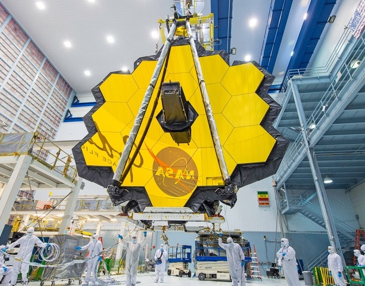
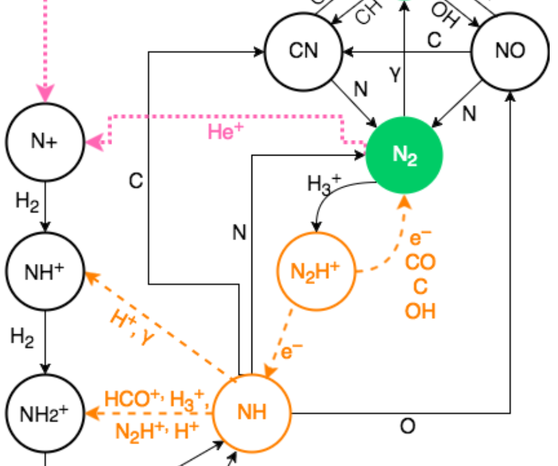
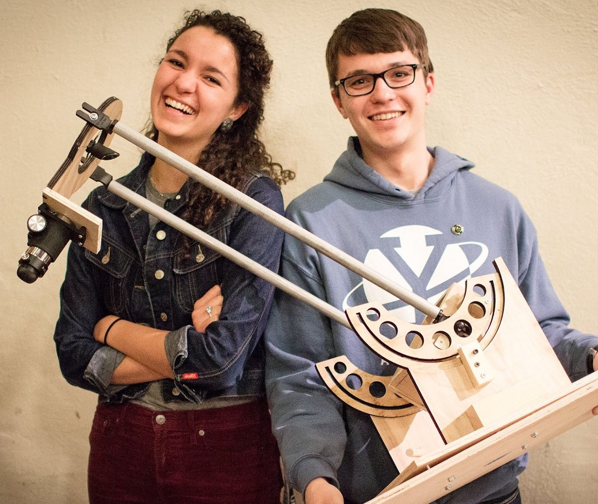
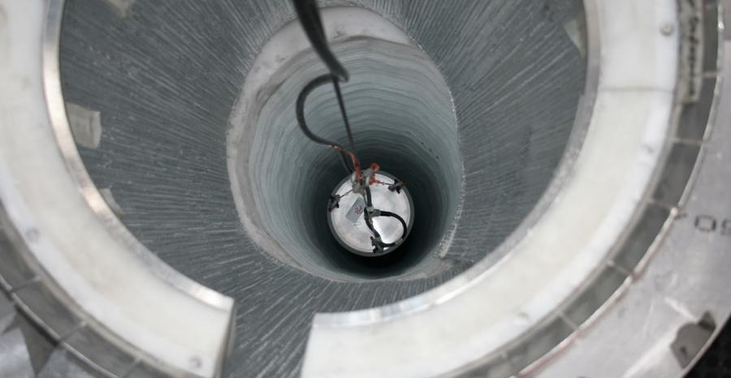
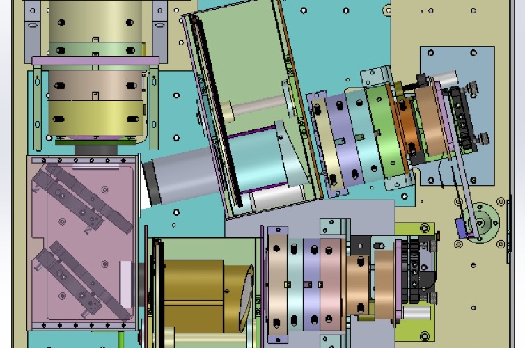
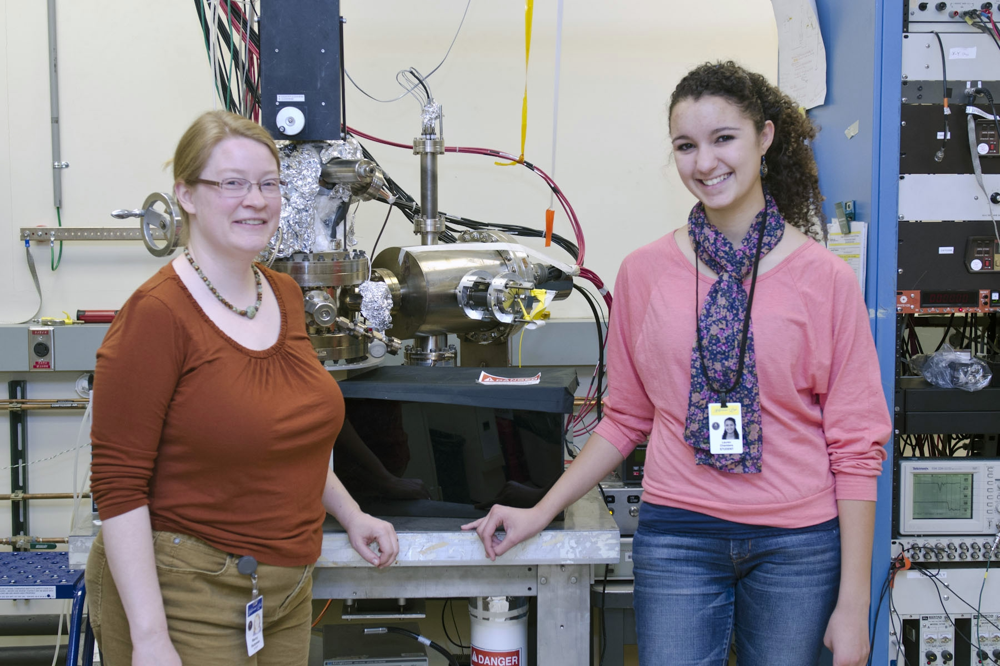

JAMES WEBB SPACE TELESCOPE
As a Research & Instrument Analyst at Space Telescope Science Institute, I am supporting the James Webb Space Telescope mission as we prepare for launch in 2021. My team at STScI focuses on the commissioning of the telescope's optics, which will occur during the first ~120 days after launch and entails aligning the segmented primary mirror to within a few microns of precision. Some of the projects I am contributing to include: preparing for exotic guiding scenarios during commissioning, simulating commissioning images from various JWST instruments, and developing a web-based application for routine monitoring and trending of observatory functions.

AMMONIA IN PROTOPLANETARY DISKS
For my senior thesis in astrophysics, I collaborated with Drs. Karin Öberg and Ilse Cleeves at Harvard University to investigate a discrepancy between theoretical predictions and observations of ammonia (NH3) in protoplanetary disks. Using a numerical astrochemical model that couples disk physics and chemistry, we determined that both gas- and ice-phase NH3 chemistry are highly dependent upon location within the disk, the prevalence of cosmic ray ionization, and the chemical inheritance of NH3 from the interstellar medium. READ IT VIEW POSTER
×

YALE AEROSPACE
Outside of formal research, I have enjoyed participating in two projects with the Yale Undergraduate Aerospace Association. As a member of the Radio Telescope team, I helped to design and build a radio telescope that now lives on the roof of Yale's Leitner Observatory. I was also the secondary project leader on the Optical Telescope team, which designed and built an automated optical telescope from scratch (shown at leftabove). My time with YUAA taught me many skills, from project management and delegation to laser cutting and prototyping. I was honored to represent YUAA (and meet President Obama!) at the 2nd annual White House Astronomy Night in 2015.

DETECTING DARK MATTER PARTICLES
The DM-Ice project seeks to detect Weakly Interacting Massive dark matter Particles (WIMPs) using detectors stationed in Antarctica, the UK, and South Korea. Working with Dr. Reina Maruyama at the Yale Wright Laboratory, I designed and constructed a Compton spectrometer for analysis of the non-linearity in organic scintillator detectors that affects spectral measurements.

GAMMA RAY BURST INSTRUMENTATION
During a summer internship at NASA Goddard Space Flight Center, I contributed to the commissioning of the Rapid infrared IMAger-Spectrometer (RIMAS). This instrument will be installed on the Discovery Channel Telescope in Arizona for dedicated rapid-response observations of gamma ray burst afterglows. Under the mentorship of Dr. Alexander Kutyrev and Neil Gehrels, I worked in LabVIEW to modularize the interface between instrument hardware and software.VIEW POSTER
×

ELECTRON POLARIMETRY
For a year-long high school honors mentorship, I worked with Dr. Marcy Stutzman on the "Micro-Mott" electron polarimeter at the Thomas Jefferson National Accelerator Facility (Jefferson Lab). I learned to program with LabVIEW in order to upgrade and organize software that controlled the polarimeter, and operated said software to collect data regarding the polarization and quantum efficiency of electron beams created with a novel photocathode material, GaAsSb:AlGaAsP.VIEW POSTER
×